")
Herblore - Herblore Habitat (Members)
Introduction | Location | Requirements | Recommended Items
Farming at the Habitat | Construction at the Habitat | Hunter at the Habitat
Herblore at the Habitat | Rewards | Development Team
Farming at the Habitat | Construction at the Habitat | Hunter at the Habitat
Herblore at the Habitat | Rewards | Development Team
The Herblore Habitat is only available to RuneScape members. Please subscribe to get this feature.
The habitat may be 'Safe', with nothing that can hurt you unless you are poisoned, but the way to the habitat can be treacherous. Beware of spiders and jogres on the way.
Introduction

Location
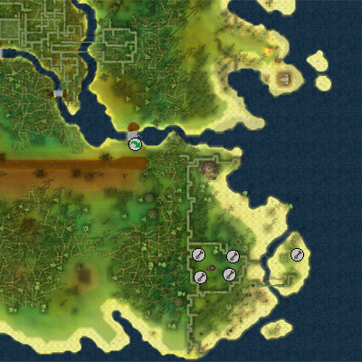
The Herblore Habitat can be found at the south-eastern point of Karamja, south-east of the Jade Vine and east of the Kharazi Jungle. It can be easily found on the world map thanks to its wealth of farming patches.
The advised method of getting to the habitat is by visiting Bettamax, in the north of Taverley, to buy some juju teleport spiritbags. These spiritbags teleport you directly to Papa Mambo and their price starts at 2,000 coins, but rises as you purchase more of them.
A popular route among budding voodoo-cultists is to travel to Captain Klemfoodle on the east side of Karamja via gnome glider (requires completion of the The Grand Tree quest), and then make their way south of the river by using the stepping stone agility crossing (level 70 Agility). A longer route takes you from Brimhaven docks, past the west side of Tai Bwo Wannai Village all the way south to Shilo Village, where you can head east to the coast.
Requirements
To be able to train the three skills at the core of the Herblore Habitat, you will need a Farming level of at least 54, a Hunter level of 70 and a Herblore level of 54. Since Farming is the skill with which you can train all other skills, you MUST have a Farming level of 54 to get any benefit from the Herblore Habitat.
If you wish to construct your own environmental features in the habitat - rather than paying Papa Mambo to make them - you will need at least level 56 Construction. Papa Mambo will ask for at least 56,000 coins to build a feature.
Recommended Items
It is recommended that you buy a juju teleport spiritbag to get to the Herblore Habitat. It is also recommended that you bring teleporting materials for when you have finished training at the habitat, as the area is very remote.
The vast majority of items needed at the Herblore Habitat can be bought from Papa Mambo or garnered from the plants and jadinkos in the area. It is worth bringing coins to buy any materials you may need from Papa Mambo, or to pay Mister Mambo for the construction of environmental features. You do not need a saw or hammer to construct any features in the Herblore Habitat.
It might also be worth bringing compost or super compost with you. While it is possible to make compost using the Herblore Habitat compost bins, you may not make enough for your liking.
To find out information about any of the items from the Herblore Habitat, simply use them on Astlayrix, and he will give you a short description of each.
Farming at the Habitat

Although three skills can be trained in the Herblore Habitat, Farming is the one that starts turning the circle of life; so, since Farming is the instigator of change in the Herblore Habitat, you MUST have the minimum Farming level of 54 to get any benefit from the area.
Farming in the Herblore Habitat is not as simple as turning up with your favourite seeds. The farming patches here - aside from the fruit tree patch - are scattered with juju, meaning that they all require seeds that are unique to the area. Your first seeds can be bought from Papa Mambo, to the north-east of the habitat, and he will offer a starter pack of seeds for free. These seeds grow into blossoms when planted in the vine flower patches of the Herblore Habitat. Everyone who comes to the area will begin by planting these seeds, gradually accruing seeds for the vine bush and vine herb patches.
You will plant, look after and harvest your seeds in an identical manner to other patches: rake the weeds from the patch, apply compost if you wish, plant the seeds, water the plants, cure them if they get diseased, and then harvest the results. Everything is done in virtually the same manner: the only real difference being that vine plants in the habitat can grow faster than their non-vine equivalents. You may purchase tools from Papa Mambo, and the leprechaun in the area will store your tools and juju potions for free.
Hunting at the habitat will give you a number of additional seeds that you can farm with at the habitat. Details of those plants can be found below.
Vine Flowers:
| Seed | Plant | Produce | Acquired From |
Level Required |
Planting Experience |
Harvesting Experience |
![[image]](../../img/main/kbase/skills/herblore/habitat/red_seeds.gif) Red vine seeds |
Red vine | ![[image]](../../img/main/kbase/skills/herblore/habitat/red_blossom.gif) Red vine blossom |
Bought from Papa Mambo, Jadinko drop |
54 |
52 | 255 |
![[image]](../../img/main/kbase/skills/herblore/habitat/blue_seeds.gif) Blue vine seeds |
Blue vine | 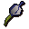 Blue vine blossom |
Bought from Papa Mambo, Jadinko drop |
54 |
52 | 255 |
![[image]](../../img/main/kbase/skills/herblore/habitat/green_seeds.gif) Green vine seeds |
Green vine | Green vine blossom |
Bought from Papa Mambo, Jadinko drop |
54 |
52 | 255 |
Vine Herbs:
There are two vine herb patches in the area: one is in the ecosystem main area, while the other can be found to the south, over an Agility shortcut that requires level 55 Agility.
| Seed | Plant | Produce | Acquired From |
Level Required |
Planting Experience |
Harvesting Experience |
![[image]](../../img/main/kbase/skills/herblore/habitat/erzille_seeds.gif) Erzille seeds |
Erzille | ![[image]](../../img/main/kbase/skills/herblore/habitat/erzille.gif) Erzille |
Jadinko drop | 58 |
87 | 87 |
![[image]](../../img/main/kbase/skills/herblore/habitat/argway_seeds.gif) Argway seeds |
Argway | ![[image]](../../img/main/kbase/skills/herblore/habitat/argway.gif) Argway |
Jadinko drop | 71 |
110 | 125 |
![[image]](../../img/main/kbase/skills/herblore/habitat/ugune_seeds.gif) Ugune seeds |
Ugune | ![[image]](../../img/main/kbase/skills/herblore/habitat/ugune.gif) Ugune |
Jadinko drop | 74 |
135 | 152 |
![[image]](../../img/main/kbase/skills/herblore/habitat/shengo_seeds.gif) Shengo seeds |
Shengo | ![[image]](../../img/main/kbase/skills/herblore/habitat/shengo.gif) Shengo |
Jadinko drop | 76 |
140.5 | 160 |
![[image]](../../img/main/kbase/skills/herblore/habitat/samaden_seeds.gif) Samaden seeds |
Samaden | 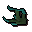 Samaden |
Jadinko drop | 80 |
170 | 190 |
Vine Bushes:
| Seed | Plant | Produce | Acquired From |
Level Required |
Planting Experience |
Harvesting Experience |
Check-health Bonus |
![[image]](../../img/main/kbase/skills/herblore/habitat/lergberry_seeds.gif) Lergberry seeds |
Lergberry bush | ![[image]](../../img/main/kbase/skills/herblore/habitat/lergberries.gif) Lergberries |
Jadinko drop | 61 |
145.5 | 31.5 | 236.3 |
![[image]](../../img/main/kbase/skills/herblore/habitat/kalferberry_seeds.gif) Kalferberry seeds |
Kalferberry bush | ![[image]](../../img/main/kbase/skills/herblore/habitat/kalferberries.gif) Kalferberries |
Jadinko drop | 77 |
220.2 | 52.5 | 375.3 |
Fruit Trees:
Although all fruit trees can be grown in the fruit tree patch, only apple, banana and orange will attract jadinkos. You may only receive apple, banana and orange seeds from the jadinkos.
| Seed | Plant | Produce | Acquired From |
Level Required |
Planting Experience |
Harvesting Experience |
Check-health Bonus |
![[image]](../../img/main/kbase/items/seeds/apple.gif) Apple seeds |
Apple tree | ![[image]](../../img/main/kbase/items/offspring/apple.gif) Apple |
Birds' nest | 27 |
22 | 8.5 | 1,199.5 |
![[image]](../../img/main/kbase/items/seeds/banana.gif) Banana tree seeds |
Banana tree | ![[image]](../../img/main/kbase/items/offspring/banana.gif) Banana |
Birds' nest | 33 |
28 | 10.5 | 1,750.5 |
![[image]](../../img/main/kbase/items/seeds/orange.gif) Orange seeds |
Orange tree | ![[image]](../../img/main/kbase/items/offspring/orange.gif) Orange |
Birds' nest | 39 |
35.5 | 13.5 | 2,470.2 |
![[image]](../../img/main/kbase/items/seeds/curry.gif) Curry seeds |
Curry tree | ![[image]](../../img/main/kbase/items/offspring/curry_leaf.gif) Curry leaf |
Birds' nest | 42 |
40 | 15 | 2,906.9 |
![[image]](../../img/main/kbase/items/seeds/pineapple.gif) Pineapple seeds |
Pineapple tree | ![[image]](../../img/main/kbase/items/offspring/pineapple.gif) Pineapple |
Birds' nest | 51 |
57 | 21.5 | 4,605.7 |
![[image]](../../img/main/kbase/items/seeds/papaya.gif) Papaya seeds |
Papaya tree | ![[image]](../../img/main/kbase/items/offspring/papaya.gif) Papaya |
Birds' nest Pawya trapping |
57 |
72 | 27 | 6,146.4 |
![[image]](../../img/main/kbase/items/seeds/palm.gif) Palm tree seeds |
Palm tree | ![[image: coconut]](../../img/main/kbase/items/offspring/coconut.gif) Coconut |
Birds' nest | 68 |
110.5 | 41.5 | 10,150.1 |
Zombie gardener
The zombie farmer in the Herblore Habitat will look after your fruit tree and bush patches if you ply him with vine blossoms, berries and other farming produce.
Special To Look After |
Charge |
||
Apple tree |
 9 x Raw sweetcorn |
||
Banana tree |
4 x Basket of apples |
||
Orange tree |
 3 x Basket of strawberries |
||
Lergberry bushes |
3 x red vine blossom |
||
Kalferberry bushes |
3 x lergberries |
||
Erzille |
 3 x green vine blossom |
||
Ugune |
3 x blue vine blossom |
||
Argway |
4 x red vine blossom |
||
Shengo |
5 x lergberries |
||
Samaden |
5 x kalferberries |
||
Construction at the Habitat
It is recommended that you talk to Papa Mambo and Astlayrix in the Herblore Habitat to get a more complete sense of what you can achieve in the Herblore Habitat.
Construction cannot be trained in the Herblore Habitat - and it's far from essential - but it does play a part in the attraction of jadinkos. You see, to attract a jadinko, you must be growing its favourite plants and its favourite environmental feature (and, for the rarer jadinkos, you must have poured a juju hunter potion onto blossoms in your vine flower patch), which is created by using your Construction skill.
You do not gain any Construction experience by building on the environmental hotspot, but you do not use up any materials, either. All you need is the right Construction level to build here. You do not need a saw or hammer to build on this hotspot.
Should your Construction level be too low to build the feature you desire, you can always ask Papa Mambo to build it for you. This is reasonably expensive, as can be noted in the table column below.
| Item | Level required |
Mambo cost |
Empty |
N/A | N/A |
Boneyard |
56 |
56,000 coins |
Abandoned house |
57 |
57,000 coins |
Thermal vent |
59 |
59,000 coins |
Tall grass |
62 |
62,000 coins |
Pond |
65 |
65,000 coins |
Standing stones |
70 |
70,000 coins |
Dark pit |
80 |
80,000 coins |
Hunter at the Habitat

It is recommended that you talk to Papa Mambo and Astlayrix in the Herblore Habitat to get a more complete sense of what you can achieve in the Herblore Habitat.
When you first enter the Herblore Habitat, there will be no creatures to hunt. This is because jadinkos - plant creatures that are grown from the vine itself - are too shy to raise their heads above the ground. Fortunately for hunters, they cannot resist the smell of certain plants, while other breeds of jadinko can't help but be attracted to certain kinds of environment. Some exclusive jadinkos will even require you to have poured a juju hunter potion onto your vine flowers.
Each breed of jadinko has different plants and features that will attract it to the ecosystem. You will have to try different combinations of plants and features to find out what attracts what, but you don't have to worry about remembering any successful combinations: Astlayrix will keep a record of what each jadinko desires as and when you find that out. The exceptions to this rule are the god jadinkos: these three creatures change their likes and dislikes every week, so you will have to look hard and work together to find out what brings them to the habitat. God jadinkos will only be attracted by those under the influence of juju hunter potions.
You will need marasamaw plant traps to catch the majority of jadinkos. These can be bought from Papa Mambo's shop, and they are used in an identical manner to box traps: simply lay the trap in a jadinko-populated area, walk away and wait for a jadinko to spring it. You can increase the chances of catching a jadinko with a marasamaw plant trap by keeping a decent distance from it, smoking it using a torch (purchased from Papa Mambo), baiting it with a vine (obtained from jadinkos), drinking a scentless potion or wearing the witchdoctor clothing.
Some jadinkos are hunted via tracking. These jadinkos can be found on the west side of the habitat, and are caught by the same methods you are used to in other areas. Simply follow the jadinko's tracks and use a noosing wand to catch the blighter.
Astlayrix will reveal what is required to attract common jadinkos if you talk to him at the habitat.
Plant Trapping:
Creature |
Level Required |
Experience Gained |
Hunter reward |
Notes |
![[image]](../../img/main/kbase/skills/herblore/habitat/common_jadinko.gif) Common jadinko |
70 |
350 | Withered vine | Chance of dropping any seeds |
| 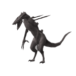 Igneous jadinko |
74 |
465 | Marble vine | Chance of dropping vine bush seeds |
![[image]](../../img/main/kbase/skills/herblore/habitat/carnivorous_jadinko.gif) Cannibal jadinko |
75 |
475 | Plant teeth | Chance of dropping vine bush seeds |
![[image]](../../img/main/kbase/skills/herblore/habitat/aquatic_jadinko.gif) Aquatic jadinko |
76 |
475 | Aquatic vine | Chance of dropping vine flower seeds |
| 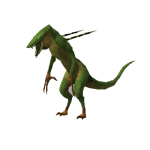 Amphibian jadinko |
77 |
485 | Oily vine | Chance of dropping fruit tree seeds |
| 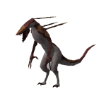 Carrion jadinko |
78 |
505 | Pungent vine | Chance of dropping vine bush seeds |
![[image]](../../img/main/kbase/skills/herblore/habitat/draconic_jadinko.gif) Draconic jadinko |
80 |
525 | Draconic vine | Chance of dropping vine herb seeds |
![[image]](../../img/main/kbase/skills/herblore/habitat/saradomin_jadinko.gif) Saradomin jadinko |
81 |
600 | Saradomin vine | Preferences change every week Chance of dropping all seeds |
![[image]](../../img/main/kbase/skills/herblore/habitat/guthix_jadinko.gif) Guthix jadinko |
81 |
600 | Guthix vine | Preferences change every week Chance of dropping all seeds |
![[image]](../../img/main/kbase/skills/herblore/habitat/zamorak_jadinko.gif) Zamorak jadinko |
81 |
600 | Zamorak vine | Preferences change every week Chance of dropping all seeds |
Tracking Jadinkos:
Creature |
Hunter Level Required |
Experience Gained |
Hunter reward |
Notes |
| Shadow jadinko | 71 |
475 | Shadow vine | Chance of dropping any seeds |
| Diseased jadinko | 78 |
580.5 | Corrupt vine | Chance of dropping any seeds |
| Camouflaged jadinko | 79 |
600 | Striped vine | Chance of dropping any seeds |
As mentioned in the Rewards section, you can gain rewards for catching all of the non-god jadinkos in a given week. You can also receive a separate reward for catching all of the god jadinkos in a given week.
If you would like to shoo a specific breed of jadinko away from the habitat, leaving you to hunt your choice of jadinko unhindered, then talk to Papa Mambo. He will offer to shoo away a jadinko breed in exchange for a number of striped vines. Each striped vine used in this manner will shoo a breed of jadinko away for fifteen minutes.
Herblore at the Habitat

It is recommended that you talk to Papa Mambo and Astlayrix in the Herblore Habitat to get a more complete sense of what you can achieve in the Herblore Habitat.
The Herblore Habitat is charged with Papa Mambo's juju magic, and its products are ideal for making powerful potions. The potions you make using ingredients from the habitat are so powerful, in fact, that they require special juju potion vials, so make sure you buy some from Papa Mambo rather than bring your own vials. These vials can be filled with water at Mambo's cauldron.
Primary ingredients for the juju potions are grown in your vine herb patch. See the Farming section abve to find out how to grow your vine herbs, and scan the Hunter tables to find out which jadinkos drop vine herb seeds.
Cleaning herbs:
| Herb | Level Required To Clean | Experience Gained From Cleaning |
Erzille |
54 |
10 |
Ugune |
56 |
11.5 |
Argway |
57 |
11.6 |
Shengo |
58 |
11.7 |
Samaden |
59 |
11.7 |
Secondary ingredients are garnered by hunting the jadinkos in the area. These jadinkos are attracted by the plants and environmental features of your habitat, and then trapped using the marasamaw plant traps or by tracking. Read the Hunter section of this article to find out which secondary ingredient is dropped by which jadinko.
Making potions:
Potion |
Herblore Level Needed |
Primary Ingredient Needed |
Secondary Ingredient Needed |
Herblore Experience Gained |
Product Effect Per Dose |
![[image]](../../img/main/kbase/skills/herblore/habitat/hunter_potion.gif) Juju hunter potion |
54 |
Erzille |
![[image]](../../img/main/kbase/skills/herblore/habitat/corrupt_vine.gif) Corrupt vine |
123 | Pour the juju hunter potion on a vine flower patch to attract more uncommon jadinkos. |
| 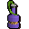 Scentless potion |
59 |
Argway |
![[image]](../../img/main/kbase/skills/herblore/habitat/shadow_vine.gif) Shadow vine |
135 | Drink this potion and all of your traps will be treated as if they had been smoked. |
| 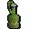 Juju farming potion |
64 |
Ugune |
Marble vine |
146 | One in three chance of picking twice the number of herbs from a herb patch. |
| 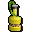 Juju cooking potion |
67 |
Shengo |
![[image]](../../img/main/kbase/skills/herblore/habitat/plant_teeth.gif) Plant teeth |
152 | This potion is not drunk. Used on a baked potato to make a strange potato, which can be combined with tuna and sweetcorn to create juju gumbo |
![[image]](../../img/main/kbase/skills/herblore/habitat/fishing_potion.gif) Juju fishing potion |
70 |
Shengo |
![[image]](../../img/main/kbase/skills/herblore/habitat/aquatic_vine.gif) Aquatic vine |
158 | One in three chance of catching a baron shark when shark fishing. |
![[image]](../../img/main/kbase/skills/herblore/habitat/woodcutting_potion.gif) Juju woodcutting potion |
71 |
Samaden |
![[image]](../../img/main/kbase/skills/herblore/habitat/oily_vine.gif) Oily vine |
160 | 1 in 10 chance of finding a wood spirit when woodcutting. Sends logs to bank for you. Small chance of receiving higher level logs, sent directly to your bank. |
![[image]](../../img/main/kbase/skills/herblore/habitat/mining_potion.gif) Juju mining potion |
74 |
Samaden |
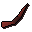 Draconic vine |
168 | 1 in 10 chance of finding a stone spirit when mining. Sends ore to bank for you. Small chance of receiving higher level ore, sent directly to your bank. |
| 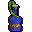 Saradomin's Blessing |
75 |
Samaden |
![[image]](../../img/main/kbase/skills/herblore/habitat/saradomin_vine.gif) Saradomin vine |
170 | Provides a +10% bonus to Farming XP when farming in the Herblore Habitat. |
| 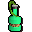 Guthix's Gift |
75 |
Samaden |
![[image]](../../img/main/kbase/skills/herblore/habitat/guthix_vine.gif) Guthix vine |
170 | Provides a +10% bonus to Herblore XP when making potions in the Herblore Habitat. |
![[image]](../../img/main/kbase/skills/herblore/habitat/zamorak_potion.gif) Zamorak's Favour |
75 |
Samaden |
![[image]](../../img/main/kbase/skills/herblore/habitat/zamorak_vine.gif) Zamorak vine |
170 | Provides a +10% bonus to Hunter XP when hunting jadinkos in the Herblore Habitat. |
The leprechaun in the habitat is able to store juju potions as well as the usual farming tools. These potions must be 3-doses, and he has a limit of 30 for each type.
Rewards
Attract a full complement of non-god jadinkos in a given week and you will gain Papa Mambo's attention. For being so in touch with the twisted nature of the Jade Vine offshoot, he will give you a boost to your choice of Hunter, Herblore or Farming XP, relative to your levels in those skills. This XP boost can only be gained once a week.
In addition to the skill boost, he will also provide you with witchdoctor legs or a witchdoctor body. These items act as camouflage while in the Herblore Habitat area. They can also be sold to Papa Mambo for 5,400 gold each.
Catch all of the god jadinkos in one week and you will receive another XP boost in your choice of Farming, Hunter or Herblore. Again, this can only be gained once a week. Papa Mambo will also give you the opportunity to own a witchdoctor mask. This mask has unlimited teleports to the Herblore Habitat and acts as camouflage in the Herblore Habitat.
Wearing witchdoctor gear once you have caught all of the god jadinkos in a given week will provide you with a momentary boost to Hunter, Herblore or Farming XP when performing actions in the habitat. This boosts lasts for 30 minutes from the moment you first wear the item. The boosts are listed below:
- Witchdoctor legs - Provides a 1% boost
- Witchdoctor robes - Provides a 2% boost
- Witchdoctor mask - Provides a 2% boost
| Item | Level Required |
||||||||||||||||||
| Attack Bonuses | Defence Bonuses | Other | |||||||||||||||||
![[Image: Stab]](../../img/main/kbase/table_text/stab1.gif "Stab") |
![[Image: Slash]](../../img/main/kbase/table_text/slash1.gif "Slash") |
![[Image: Crush]](../../img/main/kbase/table_text/crush1.gif "Crush") |
![[Image: Magic]](../../img/main/kbase/table_text/magic1.gif "Magic") |
![[Image: Range]](../../img/main/kbase/table_text/range1.gif "Range") |
|
|
|
|
|
![[Image: Summoning]](../../img/main/kbase/table_text/summoning1.gif "Summoning") |
![[Image: Strength]](../../img/main/kbase/table_text/strength1.gif "strength") |
![[Image: Prayer]](../../img/main/kbase/table_text/prayer1.gif "Prayer") |
|||||||
| 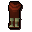 Witchdoctor legs |
70 |
+ 0 | + 0 | + 0 | + 0 | - 7 | + 11 | + 10 | + 10 | + 0 | + 10 | + 10 | + 0 | + 0 | |||||
![[image: witchdoctor robes]](../../img/main/kbase/skills/herblore/habitat/shaman_body.gif "witchdoctor legs") Witchdoctor robes |
70 |
+ 0 | + 0 | + 0 | + 0 | + 0 | + 10 | + 15 | + 19 | + 0 | + 12 | + 20 | + 0 | + 0 | |||||
| 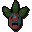 Witchdoctor mask |
70 |
+ 0 | + 0 | + 0 | + 0 | - 1 | + 4 | + 5 | + 3 | + 0 | + 4 | + 5 | + 0 | + 0 | |||||
Development Team
Developer: James C
Graphics: Kavi M, James L
QA: Daniel O, Andrew P, James H
Audio: Adam B

|
More articles in Herblore (Members Only)
|
|
|
Further Help
If this article does not help you, you may find the following sections of the RuneScape site helpful:
|
|